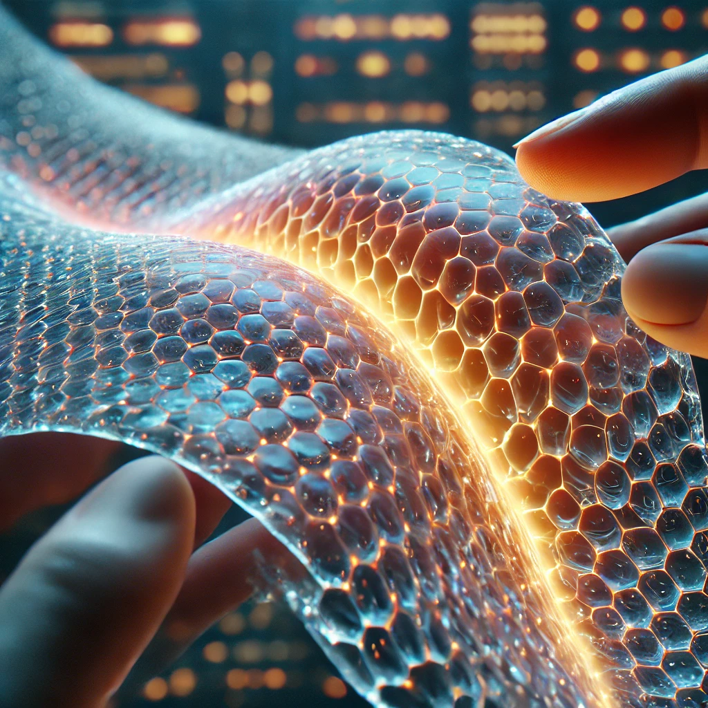

Renato Almeida
Pesquisadores de um renomado instituto de nanotecnologia desenvolveram um material inovador capaz de se regenerar sozinho após sofrer danos, assim como a pele humana. Feito a partir de polímeros inteligentes e nanopartículas especiais, o material autorreparável pode revolucionar diversas indústrias, desde eletrônicos até a construção civil e a medicina regenerativa.
O material desenvolvido é composto por uma matriz polimérica flexível enriquecida com nanopartículas metálicas e compostos químicos reativos. Quando sofre um corte ou rachadura, esses compostos se reorganizam para preencher a área danificada, reconstruindo a estrutura original sem necessidade de intervenção externa.Os testes demonstraram que, dependendo da temperatura e do grau do dano, o material pode se recuperar totalmente em menos de 24 horas. Além disso, a regeneração pode ocorrer várias vezes sem comprometer sua resistência e flexibilidade.
“Utilizamos uma combinação de polímeros e agentes químicos que, ao serem ativados por calor, luz ou mesmo por contato com o ar, iniciam um processo de reparação automática.” - explica a Dra. Mariana Vasconcelos, líder do projeto."
Embora os resultados sejam promissores, os cientistas ainda enfrentam desafios para tornar o material comercialmente viável. A equipe trabalha para aprimorar sua resistência a diferentes tipos de danos e explorar variações que possam ser aplicadas em superfícies mais rígidas e resistentes.
Atualmente, o projeto está em fase de testes industriais, e grandes empresas já demonstraram interesse na tecnologia. “Estamos otimistas quanto ao futuro desse material. Nos próximos anos, ele poderá estar presente em diversos produtos do dia a dia, tornando-os mais resistentes e sustentáveis”, afirma o pesquisador Felipe Andrade.